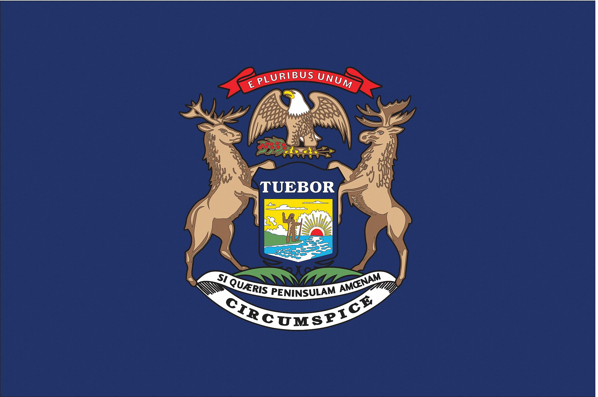
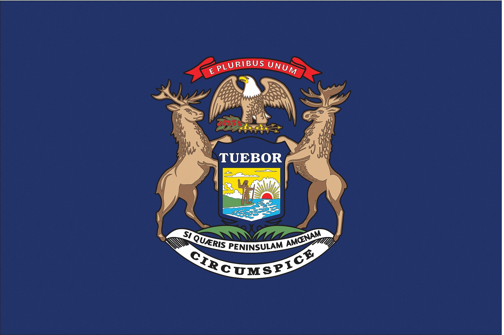

The University of Michigan (Michigan or UMich) is a public
research university in Ann Arbor, Michigan. Founded in 1817
by an act of the old Michigan Territory, as the Catholepistemiad,
or the University of Michigania, 20 years before the territory
became a state, the university is Michigan's oldest. The
institution was moved to Ann Arbor in 1837 onto 40 acres (16 ha)
of what is now known as Central Campus, a U.S. historic district.
Since its establishment in Ann Arbor, the university has expanded
to include some 500 buildings spread out over the city. The
university has been governed by an elected board of regents
independently of the state since 1850, when the state's second
constitution was officially adopted.
For more detailed information, please check it via this
link
.